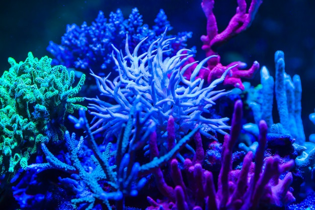

¿Cuál es el ciclo biogeoquímico de los corales?
El ciclo biogeoquímico, aunque suena a algo difícil, es simplemente el intercambio de la materia entre lo vivo y no vivo. Este ciclo se da en los corales. En el siguiente artículo, te presento el ciclo biogeoquímico de la Gran Barrera de Coral Australiana.
Leer entrada